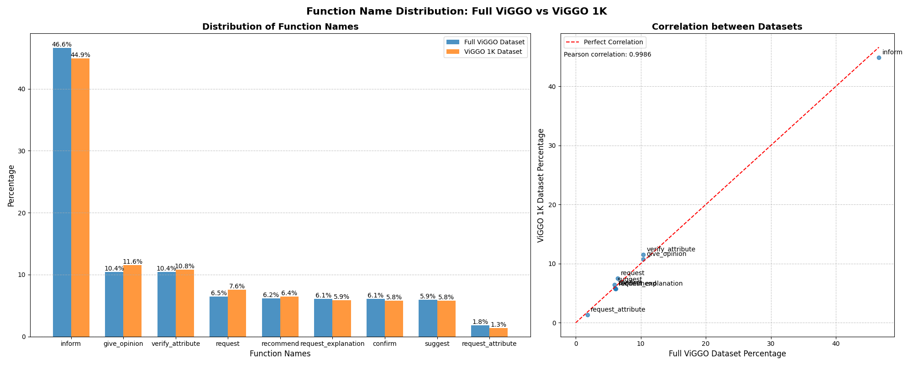
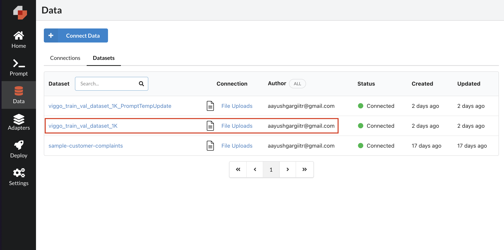
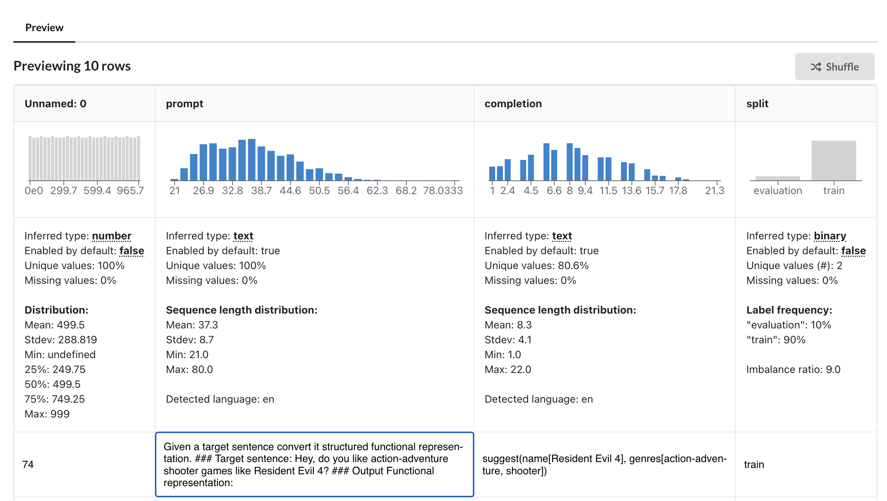
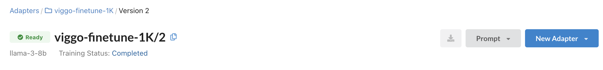
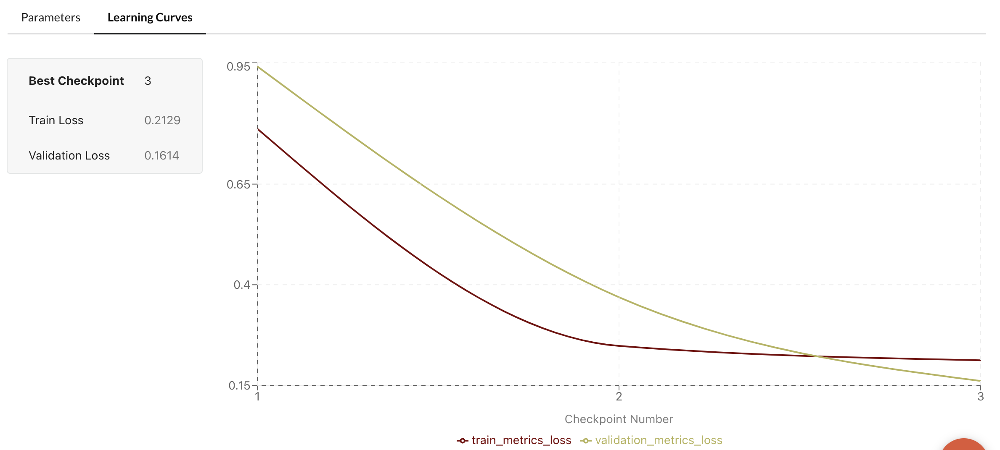
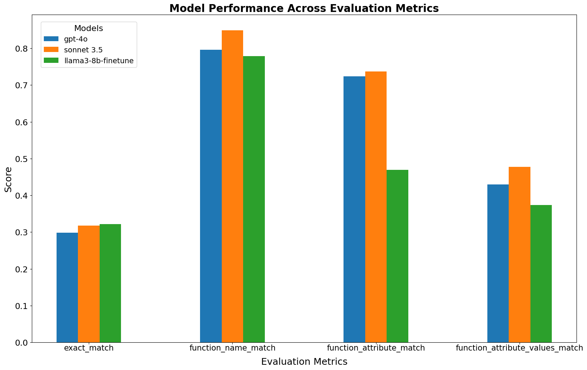
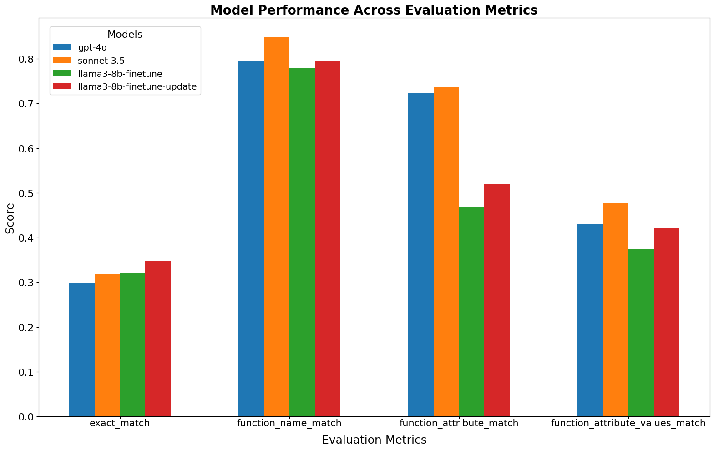

Part III: Fine-tuning Llama-3-8B for Structured Functional Representation Extraction
Last week, I published the second blog in my LLM fine-tuning series, comparing various models performance in functional representation extraction.
In this third part of the series, I discuss the first steps toward fine-tuning an (open-source)-LLM for functional representation extraction. My aim is to give you all a sneak peek at the kind of performance you can expect from fine-tuning an LLM for a custom task. To streamline this step (and to satisfy my own curiosity 😊), I will use Predibase. It is a fast, cheap, and efficient open-source LLM fine-tuning and deployment platform.
FYI: I have some free Predibase credits through Dan’s and Hamel’s LLM course. Therefore, it is a perfect opportunity to put those credits to good use! 😬
Note: Whenever I mention “finetuning LLM,” I am specifically referring to LoRA (Low-Rank Adaptation) finetuning of a Large Language Model. For overview of LoRA, please read Sebastian Raschka’s blogs (LORA Blog 1, LORA Blog 2).
Task and Dataset
Similar to my previous blogs, the custom task is to predict the structured functional representation from the given text video game opinions of the ViGGO validation dataset.
To make this exercise interesting and challenging for future experiments, I will use a maximum of 1000 examples for fine-tuning any LLM model, instead of the full ~5K train dataset.
Below is an example from the randomly selected 1K train dataset:
Text : I remember you saying that you loved The Room. Do you tend to enjoy PC games from 2012?
functional_representation : verify_attribute(name[The Room], release_year[2012], rating[excellent], platforms[PC])As shown in the graph below, the selected 1K dataset is a fairly representative sample of the full ViGGO train dataset.

Upload the dataset to Predibase
Predibase requires you to upload the instruction fine-tuning dataset in particular format. This is from Predibase docs:
For instruction fine-tuning, your dataset must contain two columns named prompt and completion: - prompt: Your input prompt. It serves as the starting point or the guiding information for the model. - completion: The expected response that corresponds to the input provided in the “prompt” column. - split (optional): Should be either train or evaluation. To learn more, check out this section.
Make sure to add the prompt template to the examples and convert them to the correct format. For this exercise, I use the following prompt template:
prompt_template = """Given a target sentence convert it structured functional representation.
### Target sentence: {text}
### Output Functional representation:
"""You can connect your dataset to Predibase via the UI or Python SDK. Here, I will upload the dataset using SDK.
# Initialize Predibase client
pb = Predibase(api_token=os.environ["PREDIBASE_API_TOKEN"])
# Upload the dataset
dataset = pb.datasets.from_file("viggo_train_val_dataset_1K.csv",
name="viggo_train_val_dataset_1K")Once uploade, you can check the uploaded dataset on the Predibase UI.  
For detailed steps on uploading the dataset to Predibase, please refer to the companion blog notebook.
Setup and Finetune
Once you have uploaded the dataset, running the fine-tuning process is refreshingly simple. For this example, I fine-tune the base llama-3-8b model with the following parameters: epochs=3, rank=16, and learning_rate=2e-4.
# Create an adapter repository
repo = pb.repos.create(name="viggo-finetune-1K",
description="Llama-3-8b adapter repository for viggo 1K examples"
)
# Create and run the fine-tuning job
adapter = pb.adapters.create(
config=FinetuningConfig(
base_model="llama-3-8b",
epochs=3,
rank=16,
learning_rate=0.0002,
),
dataset=dataset,
repo=repo,
description="baseline-llama-3-8b",
)That’s all you need to do to submit a job! Once completed, it will be available on the Predibase platform.
 
You can always tweak multiple hyperparameters (see Finetuning Config) and run the fine-tune job again. All your fine-tune jobs will be available on the Predibase platform.
Evaluate the Fine-tuned Model
Predibase provides both popular Serverless endpoints and Dedicated deployments options for opens-source LLMs and their fine-tuned LORA checkpoints. I will create serverless endpoint for this case.
Note, atleast for now, serverless deployments are available for free.
Generate the responses for validation dataset
Similar to my previous blogs, I will evaluate the finetuned model on ViGGO validation dataset and calculate custom performance metrics metrics for a better understanding of finetuned model performance.
First, I generate the responses for the validation dataset:
# Initialize the Predibase deployment client
lorax_client = pb.deployments.client("llama-3-8b")
# Load the validation dataset
viggo_dataset = load_dataset("GEM/viggo")
val_dataset = viggo_dataset['validation']
# finetuned adapter id
adapter_id = "viggo-finetune-1K/2"
responses_dict = {}
for idx in range(len(val_dataset)):
if idx % 50 == 0: print(f"Processing {idx}/{len(val_dataset)}")
output = lorax_client.generate(prompt_template.format(text=val_dataset["target"][idx]), adapter_id="viggo-finetune-1K/2", max_new_tokens=150).generated_text
ground_truth = val_dataset["meaning_representation"][idx]
text = val_dataset["target"][idx]
responses_dict[idx] = {"output": output, "ground_truth": ground_truth, "text": text}Note: Remember to replace “viggo-finetune-1K/2” with the correct adapter ID. You can find the adapter ID in the Predibase dashboard.
Now, I can generate the evaluation scores using custom evaluation metrics and compare them with previously calculated GPT-4 and Claude 3.5 Sonnet scores:

The initial finetuning of LLaMA-3-8B using 1,000 random examples from the ViGGO dataset, while not surpassing GPT-4 and Claude 3.5 Sonnet, shows promising results and outperforms several models from our previous blog. Notably, the exact_match score is even better than that of the two best-performing models.
Improved Performance with Updated Prompt Template
A simple yet effective way to enhance the model’s performance is by refining the prompt template. By providing clearer instructions that convey the structure of the functional representation, we can guide the model to produce more accurate outputs.
I updated the prompt template as follows:
prompt_template = """Given a target sentence construct the underlying meaningful functional representation of the input sentence as a single function with attributes and attribute values.
### Target sentence: {text}
### Output Functional representation:
"""After uploading this new dataset, finetuning the model, and evaluating it with the new adapter viggo-finetune-1K/3, there is significantly improved evaluation metrics. Notably, the model now surpasses GPT-4o’s scores for exact_match and function_name_match.

This improvement highlights the importance of clear and specific instructions in prompt engineering, even when working with finetuned models.
Conclusions..
First of all, My overall experience with Predibase has been positive, particularly in terms of rapid finetuning of models. While there are some limitations such as restricted hyperparameter tuning, standardized dataset format, and inability to download adapters in the developer tier, it offers a user-friendly platform for fine-tuning (LORA) large language models. I was able to quickly upload, setut, finetune and infer the llm models.
I achieve out-of-the-box performance using only random
1Kexamples. Although the fine-tuned llama-3-8b model doesn’t match the performance of GPT-4 and Sonnet 3.5 on all metrics. This demonstrates the potential of fine-tuning with limited data, highlighting the efficiency of the approach for task-specific model adaptation.
Next steps…
- My next goal is to further enhance the model’s performance on evaluation metrics while maintaining a limit of 1,000 training examples. LIMA: Less Is More for Alignment paper has demonstrated in the past that even 1,000 well-curated examples can lead to strong finetuning performance.
- Careful curated selection of examples and hyerparameters will definitely improve the performance benchmarks on evaluation metrics.
- In addition to it, I will deep dive into one of my favorite LLM fine-tuning tools, Axolotl.
References
- Part II blog post of series
- Notebook I: Analyze_Viggo_Dataset.ipynb
- Notebook II: Finetune_llama-3-8b_Predibase.ipynb
- Predibase Platform
- LORA blog I: Finetuning Large Language Models (LLMs)
- LORA blog II: LLM Research Insights: Instruction Tuning & Training Paradigms
- Llama 3
- LIMA: Less Is More for Alignment
- Axolotl: A Framework for Fine-tuning LLMs
Thanks for reading! If you have any questions or feedback, please let me know on Twitter or LinkedIn.